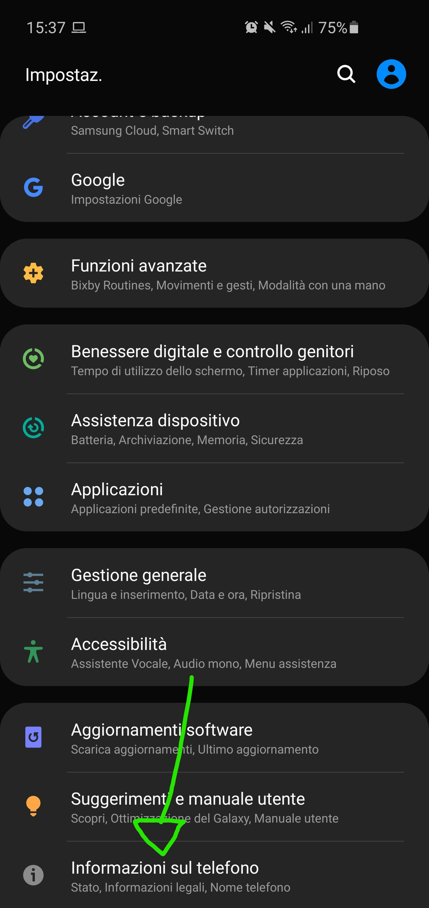
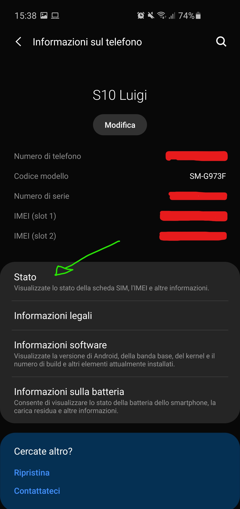
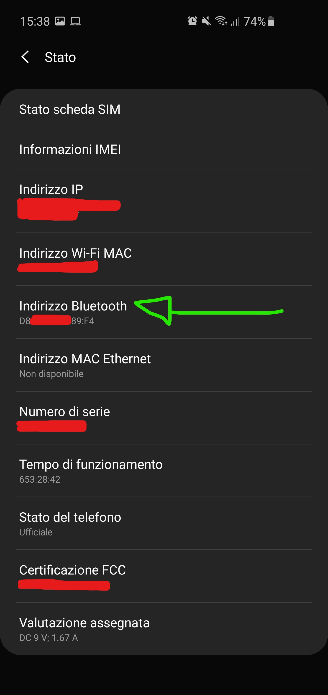

How to know the bluetooth MAC address of your android phone
Go in to the settings
- At the end of the settings you can find the: "Informations about the phone"

- Tap on status:

- Take note of the Bluetooth address that you see. If you do not see anything, you have to turn on your bluetooth.

Go back to NextRoom